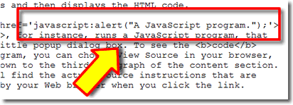
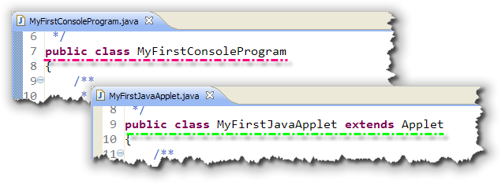
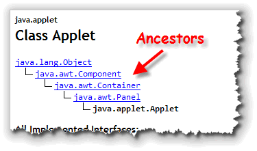
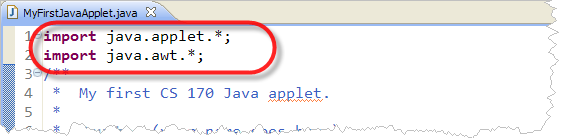
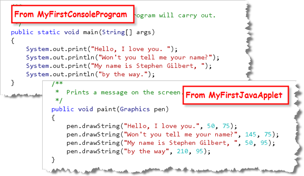
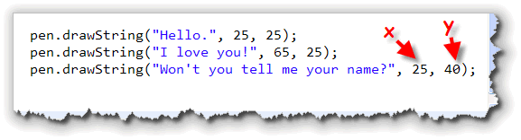

Java applets are programs that run inside of your Web browser, like Ben Permadi's Kaleidoscope Painter shown on the right. (You can run the applet by clicking on the link in the previous sentence.)
Java programs come in two basic flavors: applications that are written to be run as standalone programs on your local machine, and applets, which are written to be embedded inside a Web page.
In the last chapter, you created your first Java applet: MyFirstJavaApplet; now, let's see what makes it work. In this chapter, you'll learn:
- about the difference between JavaScript and Java applets
- about the differences between Java applets and Java applications
- how to display text output in a Java applet
- about the different applet methods that you can override
Let's start by looking at the difference between JavaScript and Java applets.
Applets and JavaScript
Web pages created using HTML are static pages. You can make your Web pages interactive or dynamic by embedding programs written in JavaScript (or VBScript on Internet Explorer). When you use a scripting language like JavaScript, the actual human-readable source code for your program is embedded along with the HTML in your Web page.

When your browser downloads a page containing JavaScript, your browser itself interprets the JavaScript code and then executes it, much the same way it interprets and then displays the HTML code.Clicking this link, for instance, runs a JavaScript program, that displays a little popup dialog box. To see the code for this program, you can right-click on the page, and choose View Source in your browser. Scroll down to the third paragraph of the content section, and you'll find the actual source instructions that are interpreted by your Web browser when you click the link.
Java Applets
Java applets, on the other hand, work differently. An applet is a compiled Java program that is stored on a Web server. The code for the applet itself isn't contained inside your Web page. Instead, you add a special tag to your HTML, (originally the applet tag, but with HTML5 the object tag is used instead), that tells the Web browser where to find the compiled code, and how to display it.
When your Web browser encounters a reference to a Java applet in a Web page, it sends another, separate request to the server, asking for the compiled applet code. This is the same way that images or other types of "embedded" content, such as Flash movies, work.
A Java applet is a special kind of Java program, because it can't run on its own: it needs a Web browser to give it a "home". When your Web browser receives the compiled Java program from the Web server, it launches a Java Virtual Machine (this is the interpreter that will run the Java program), provides a bit of screen real estate for the applet to use, and then lets the applet start running.
Note:
Java applets do not have a main() method,
like the applications from last week. That means
that another Java program, (one having a main()
method), must be used to display them. This "display-my-applet"
program is built-in to your Web browser, or, you can run it
as an external program called appletviewer. If you attempt
to "run" your applet class by itself, you'll get an error message
that complains about the missing main() method.
You won't actually need to use any HTML to create your applets using DrJava. DrJava contains a built-in applet viewer so you can run your applet on your local machine.
Applets and Applications
Now that you know what a Java applet is, and you've created and run your first applet, let's see how it is different from the applications you've written up to now. To do that, we'll compare MyFirstJavaApplet to MyFirstConsoleProgram, two of the programs you typed in and ran in the last chapter.
If you look closely at MyFirstJavaApplet you'll see that most of it looks familiar, but it also looks a little strange as well. That's because while it's similar to a console program, it's not exactly the same.
The Class Header
Let's take a look at a few of the syntax issues
that arise because of the differences between
applets and applications.

The class header for the applet MyFirstJavaApplet, on line 9, is almost identical to the header for MyFirstConsoleProgram on line 7. As you can see, the only difference is that the applet contains an extra phrase,extends Applet
following the class name. Let's look at what that means.
What is "extends Applet"?
The word extends following the class name is one
of Java's keywords like public and class.
The extends keyword means that what
precedes it (in this case the public class MyFirstJavaApplet),
adds something to, or builds upon, what follows it (in this
case, something called Applet).
The ACM console
program you created in this chapter did the same thing, except
that your ACM program extended ConsoleProgram.
This invokes the object-oriented feature called inheritance.
We'll study more about inheritance later in the text.
You might wonder why MyFirstConsoleProgram.java doesn't
have a similar extends clause tacked onto the end of
its header line. Surprisingly, it does, (in a way). If you
don't explicitly specify a superclass when you write a class
definition, Java implicitly tacks on the phrase
extends Object to the end. You can, if you like,
add this code yourself to MyFirstConsoleProgram
just to see that it works, (but you don't have to).
That makes sense. If a header is supposed to introduce a class, this part of the header is describing its family lineage. Sort of like a medieval herald at a ball:
Remember that a header introduces a class and that this part of the header describes its lineage. Sort of like a medieval herald at a ball:
Announcing Fred, Duke of URL, heir of Oingarten
The real question here is:
- "What's an
Applet, - and where does
Appletcome from?"
We can tell right away that Applet isn't a keyword like
public or class or extends,
because we know that all of the keywords are lowercase, and
Applet is capitalized.
Perhaps, our knowledge of convention might help; and,
indeed it does. If you look back at the convention for
identifiers, you'll see that only classes begin with a
capital (like Applet) followed by lowercase characters.
In fact, Applet is a class, one of the classes
supplied as part of the standard class libraries that are
part of the "Java Platform".
Applet Ancestors

TheApplet class actually has quite a pedigree, which
you can discover by looking at the
Java documentation (JavaDocs) for the Applet class. As you can see, the Applet class is descended from
the Panel class, which is a child of the
Container class, which is a subclass of
Component, which comes from Object,
the root or base class for all
Java classes, both the "built-in" classes, and the user-defined
classes that you'll create on your own.
Fully Qualified Names and Packages
You might also notice in the documentation that the
full (or fully-qualified) name of the Applet
class is java.applet.Applet. The first part of the
fully-qualified name is the package that contains that class.
A package is just a way of describing to the Java compiler
and to the Java Virtual Machine the location where a specific class
we want to use is stored. In this case, the Applet class
is in the package, java.applet.
Package names that begin
with java are part of the core Java packages, included
with the Java Platform.) This means that the actual class file
is stored in a folder named applet, which is, itself stored in
a folder named java. Usually all of these folders
and classes are stored in a Java archive file that the JVM
automatically searches every time it is launched.
When you use a class inside a Java package, you can always write out the fully-qualified name of the class. That means, our original header could have been written like this:
public class MyFirstJavaApplet extends java.applet.Applet
Of course that's a lot more work! It's much easier simply to
use the name Applet. To do so, however, requires
that you add an import statement to the
program, just like we've done previously for the acm.program
package:

In our case, since we said that our appletextends Applet,
we need to tell the compiler where to find the
Applet class. The Applet class
is in the package, java.applet.
In addition to the java.applet package, your applets
will almost always import the classes in the java.awt
package. This package includes the Graphics class which
you'll use for drawing your output, and the Color and
Font classes which you'll meet later.
Review: Wildcard and Specific Imports
Remember that you can also import specific classes from a package, by writing something like:
import java.applet.Applet;
import java.awt.Graphics;
When you do this, you cannot then use another class in the
Graphics package, (say Color for
instance), without explicitly importing that class as well.
Some programmers prefer to explicitly import individual
classes because they feel it makes their code clearer. It
does not, however, make your programs any smaller to do so.
Note that your console program, MyFirstConsoleProgram,
doesn't use the import statement because
it doesn't make use of any classes outside of the library named
java.lang. This package is automatically loaded
by every Java program, and it includes the String
class and the System class that we used in
our program.
The paint() Method
Finally, both MyFirstConsoleProgram and
MyFirstJavaApplet contain a method that displays exactly
the same message:

- In a our console program, the
main()method is called automatically by the Java runtime when you run your program. Inside that method you putprint()andprintln()statements to display your output. - In an applet, there are actually several predefined
methods that are called whenever your applet
is run (either by your IDE or by your Web browser). These
lifecycle methods are automatically
invoked (or called) in a specific order. If you want to
do
outputin your applet, though, you'll put your code inside thepaint()method.
The Method Header
Remember that a method definition, like a class definition, consists of both a header, and a body, and that the method definition is placed inside the class definition.
The paint() method header consists of these four pieces:
public: This is the same access specifier you used in yourmain()method or your ACM console program'srun()method. This allows objects from different classes (like theAppletviewerclass or your Web browser) to ask aMyFirstJavaAppletobject to display itself.void: Like therun()andmain()methods,paint()performs an action, rather than calculating a value. These kinds of methods have avoidmethod return type.-
paint: Just as you must spellrun()andmain()correctly, or the Java runtime won't call them, you must be careful to spellpaintexactly as shown. WritingPaint()orPAINT()will not create an error, but your method won't be called either. Your Web browser will only call thepaint()method, and it's very particular about the spelling. -
(Graphics pen): Thepaint()method takes one, single parameter, aGraphicsobject, that we've namedpen. We could have named this object anything we like, because "pen" is just an identifier. Usingpicassoinstead ofpenwould have worked just as well.Very often, this parameter is named "g", since it's very short and easy to type, kind of like using "i" for an array index. I prefer the name "pen" since it reminds me what the
Graphicsobject actually does.
Note, that unlike the main method in your console
program, applet methods never use the
static modifier.
Drawing Text
Instead of using System.out.println()
to print a message on the console window, applets
draw your text on the surface of your applet by using the
Graphics drawString() method.
With println(), you only need to supply
the text you want to display, since each line of output
appears immediately following the previous output. With
the drawString() method, though, you need to
provide three parameters:
- the text you want to display
- the horizontal position to start drawing
- the vertical position to start drawing
In this example, the words "Won't you tell me your name?" are
displayed 25 pixels in from the left-hand edge of the applet
and 40 pixels down from its top:

When drawing text, the horizontal (x), and vertical (y) positions where the text appears are measured from the upper-left corner of your applet, (not from the upper-left corner of your screen or of your browser window).- The unit used for measurement is the pixel
- The x,y arguments represent the baseline of the text—an imaginary line where the text "sits".

Since the coordinates used by drawString()
represent the baseline of the text, if you use the coordinates 0,0,
all of your text will be positioned outside of your applet,
because it will be sitting "on top of" the top border. Java
(wisely) prohibits you from painting all over screen real estate
that you don't own, so you won't be able to see your text at all.

Java Applet Summary
- Java applets have the same basic structure as a console program,
except that you need to add
extends Appletto the class header. - The
Appletclass is contained in the standard Java class libraries. To use it, you need toimportthejava.appletpackage. Most features you'll use also require you to import thejava.awtpackage. - Instead of a
main()method, you'll display output in your applet'spaint()method. Thepaint()method must have a singleGraphicsparameter, which will automatically be supplied by the runtime system. - To display text, call the
Graphics drawString()method inside yourpaint()method. The method takes three arguments or parameters: theStringto display and the position to display it as an x-y pair of integers.